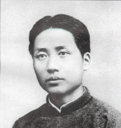

|
Welcome to the |
 |
"In the struggle to defend the legacy of Leninism . . . [Stalin] proved himself to be an outstanding Marxist-Leninist fighter. . . . Stalin's works should, as before, be seriously studied . . . [to] see what is correct and what is not.
On the Historical Experience of the Dictatorship of the Proletariat (1956)
". . . Stalin emphasized only technology, technical cadres. He wanted nothing but technology, nothing but cadre; no politics, no masses. . . . Stalin speaks only of the production relations, not of the superstructure, nor of the relationship between superstructure and economic base. . . . Stalin mentions economics only, not politics."
Concerning Economic Problems of Socialism in the U.S.S.R. (1958)
All selections from volumes I, II and III of the Selected Works of Mao Tse-tung are English translations based on the second Chinese edition of these volumes. Selections from volumes IV and V are translations from the first Chinese edition.It is worth noting that volume V was published after the death of Mao. This raises the question of the "authenticity" of the texts appearing in this volume. If one compares, for instance, the essay "On the Ten Major Relationships" contained therein, the "official" version, with the "unofficial" version that appeared during the Great Proletarian Cultural Revolution, the differences are striking. Equally worthy of mention is that volume V (at least the English-language edition) is no longer available.
|
Selected Works of Mao Tse-tung | |||||
|
1926-37 |
1937-41 |
1941-45 |
1945-48 |
1949-57 |
1958-66 |
|
| |||||
|
There are also separate .pdf versions |
| ||||
|
Vol. I.pdf |
Vol. II.pdf |
Vol. III.pdf |
Vol. IV.pdf |
Vol. V.pdf | |
SEARCH ENGINE
SEARCH ENGINE for .PDF Versions
-- Volume I --
THE FIRST
THE PERIOD OF THE WAR OF RESISTENCE
-- 1937--
THE PERIOD OF THE WAR OF RESISTENCE
-- 1941 --
THE THIRD
-- 1945 --
THE PERIOD OF
-- 1949 --
REVOLUTIONARY CIVIL WAR
PERIOD
-- 1926 --
REVOLUTIONARY CIVIL WAR
PERIOD
-- Volume II --
AGAINST JAPAN (I)
(cont.)
-- Volume III --
AGAINST JAPAN (II)
(cont.)
-- Volume IV --
REVOLUTIONARY CIVIL WAR
PERIOD
(cont.)
-- Volume V --
THE SOCIALIST REVOLUTION AND
SOCIALIST CONSTRUCTION (I)
(cont.)
(A Critique of Soviet Economics (294k))